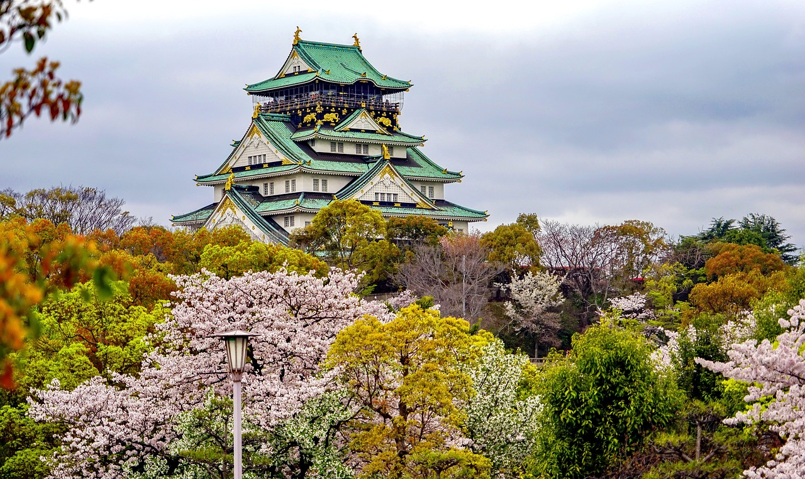

Omotenashi
"Hospitalidad japonesa en su máximo esplendor"

En los últimos años, los hoteles que se enfocan en la “eficiencia” se han vuelto muy comunes. Detrás de esto, se encuentra principalmente que el modelo de alojamiento de las cadenas locales proviene de las cadenas hoteleras de estilo americano.
Tomando como ejemplo su forma de servicio, lo cual la “hospitalidad” estadounidense se ha convertido en el estándar para el servicio hotelero en todo el mundo y se ha arraigado profundamente en los huéspedes en general.
Sin embargo, por naturaleza, la “hospitalidad” está profundamente arraigada a la historia, cultura y tradición de cada país. Por lo que la “hospitalidad” a la que uno está acostumbrado es la del país de donde proviene.
Nosotros continuaremos dando lo mejor, para seguir ofreciendo la hospitalidad japonesa “OMOTENASHI” para que nuestros clientes japoneses se sientan como estar en casa.
Además, nos gustaría transmitir a este país el “OMOTENASHI”, hospitalidad japonesa para que sientan la diferencia y comprendan la cultura japonesa, el estilo de vida que es una combinación de cortesía y armonía.
El “OMOTENASHI” representa la hospitalidad japonesa en su máximo esplendor ya que integra la armonía social y la armonía con la naturaleza, que básicamente comprende el origen de la esencia japonesa.